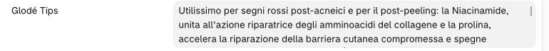

-
Aprite il prodotto e cliccate nel campo «Glodé Tips».

-
Scrivete il consiglio (una riga vuota separa due paragrafi), poi cliccate «Salva».
Come vanno gli a capo?
Una riga vuota fra due blocchi di testo: sul sito diventano due paragrafi. Un a capo semplice va a capo dentro lo stesso paragrafo. Grassetti, elenchi e collegamenti non funzionano: il testo esce così com’è.
Come tolgo un tip?
Cancellate tutto il testo e salvate: la tendina non compare più. Anche un campo con scritto soltanto «n.d.» o un trattino vale come vuoto.

Sul sito
Il testo compare nella tendina «Glodé Tips» della scheda, fra «Modo d’uso» e «INCI completo». Se il campo è vuoto, la tendina non c’è.